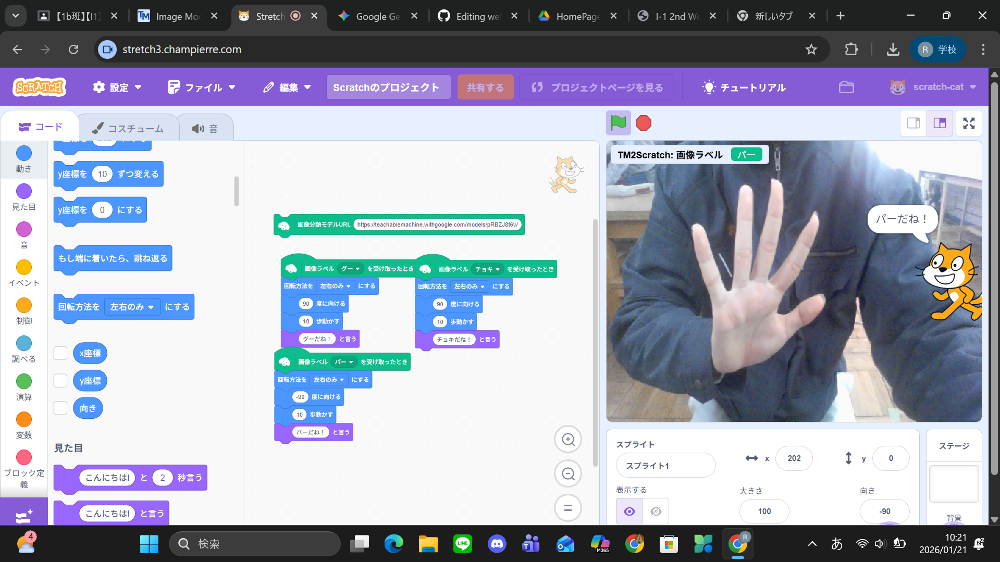
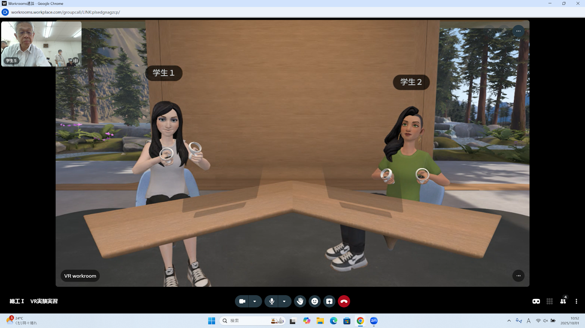
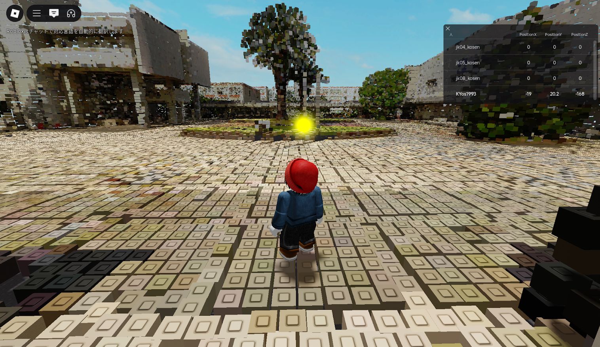

第2週目
2-1 2週目のレポートをHTMLで作る
1.内容
GitHubを用いて2週目のレポートのホームページを作成した。GitHubで作成してあるURLのyour ID部分を自分のIDに変更することで自分のホームページと1～3週目のレポートのホームページにワンクリックで行けるようになった
2.感想
前回からの続きとしてホームページを作成したが、前回からの知識を生かしてスムーズに進めることができた。URLの変更は
2-2 機械学習体験

1.内容
Teachable Machine を用いて画像データからグー、チョキ、パーを判断させた。そして、そのURLを用いてStretch3でグー、チョキ、パーでそれぞれスプライトが応答するプログラムを作成した。
2.感想
いつも使っているchatGPTやGeminiなどのAIも多くのデータから判断しているのだと感じた。しかし今回使用した画像データはグー、チョキ、パーそれぞれ100枚程度だったので画像を増やさなければ精度が低いと感じた。
2-3 VR（バーチャルリアリティー：Virtual Reality）の体験
 
1.内容
VRゴーグルを使ってメタバース世界の大阪公立大学工業高等専門学校を探検するrobloxとVR会議室のworkroomsでVRの体験を行った。コントローラーを操作して、VRやメタバースの没入感を学習した。
2.感想
Robloxの自由度とWorkroomsの臨場感を体験し、VRの汎用性はとても高いと感じた。遊びから仕事まで、場所を問わず誰かと「同じ空間」を共有できることは、物理的な距離を消し去り、まるですぐそこに人がいるように感じた
。